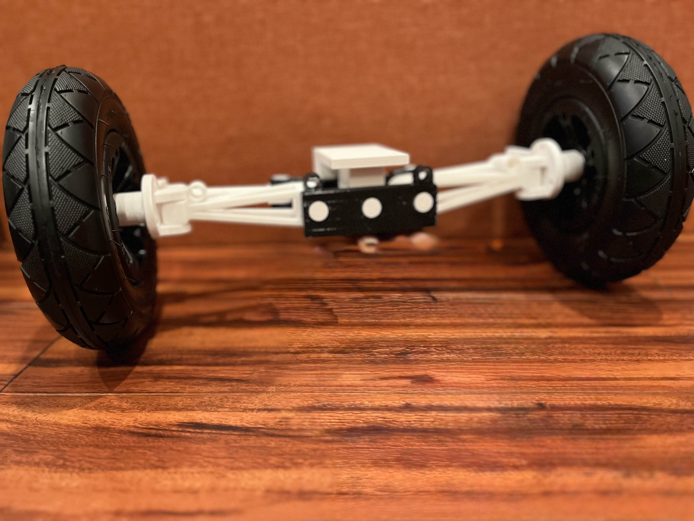
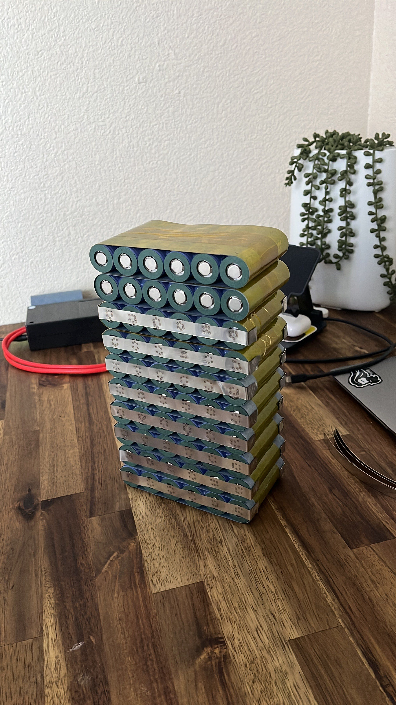
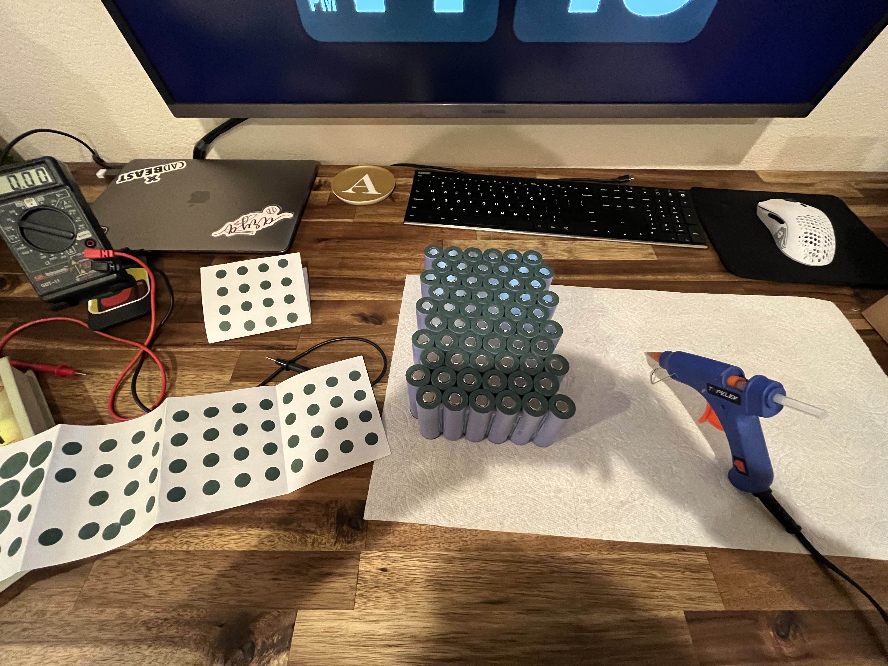
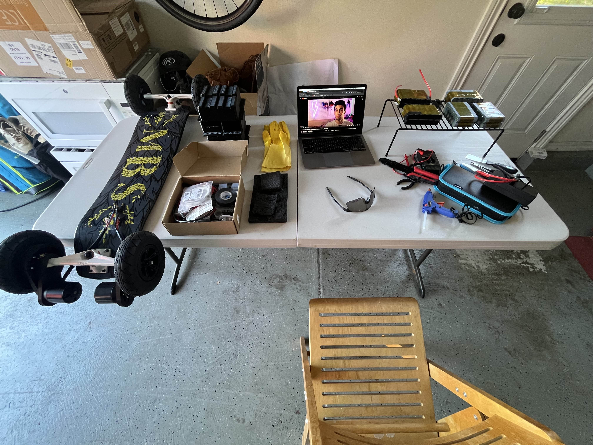

All-Terrain Electric Mountainboard
High-torque, rear-wheel-drive electric skateboard designed to merge skateboarding, hiking, and off-road exploration
Overview & Motivation
As someone who loves skateboarding, hiking, and mountain biking, I wanted to build a platform that combined the agility of a skateboard with the terrain capability of off-road travel.
Traditional electric skateboards excel on pavement but fail on dirt, gravel, roots, and uneven terrain. This project addresses those limitations through mechanical design, drivetrain architecture, and intelligent motor control.
Key Design Challenges
- Maintaining traction on loose and uneven terrain
- Traversing large obstacles safely
- Balancing agility with high-speed stability
- Delivering sustained torque without overheating
- Achieving long-range battery life under high load
- Ensuring rider safety during aggressive off-road riding
Mechanical Design & Suspension
A custom suspension system smooths impacts from rocks, roots, and uneven surfaces, allowing the wheels to maintain ground contact for improved traction and control.

Large treaded tires improve obstacle clearance and grip. Wider trucks increase stability, while intentionally loose tuning preserves a sharp turning radius for technical riding in tight terrain.
Drivetrain, Motors & Traction Control
The board uses two rear-mounted motors, each controlled by its own VESC. This enables independent torque control per wheel and software-based traction control.
When excessive wheel slip is detected, power is reduced or cut to the slipping wheel to maintain stability and efficiency across loose or variable terrain.
Battery System & Range
A custom high-capacity battery pack delivers approximately 43 miles of range, optimized for high current draw with minimal voltage sag under sustained load.


Electrical System Architecture
Independent motor control
Rider Safety & Control
Removable foot straps secure the rider on rough terrain while remaining optional for smooth surface riding. The modular architecture allows individual components to be swapped out for testing or repair.

Performance Specifications
| Drive | Dual rear motor (independent) |
| Range | ~43 miles |
| Top Speed | 30+ mph |
| Controllers | Dual VESC |
| Suspension | Custom shock-absorbing trucks |
| Tires | Large treaded off-road |
What I’d Improve Next
- IMU-based closed-loop traction estimation
- Regenerative braking optimization
- Full waterproofing for wet-weather riding
- Weight-optimized structural enclosure
- Onboard telemetry logging and real-time performance display